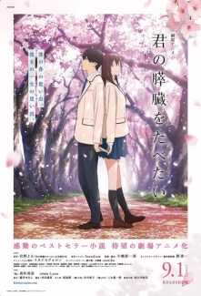
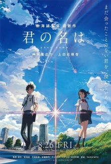
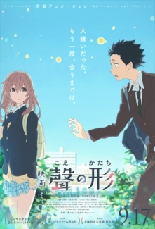
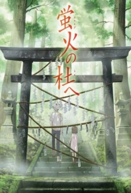
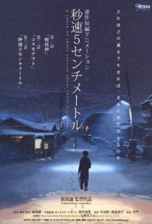
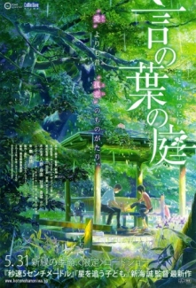

Kimi no Suizou wo Tabetai
Nisan'da bahar zamanı kiraz ağaçlarının son çiçekleri açmaya devam eder. Başkalarına ilgisi olmayan kitap kurdu soğuk oğlan, hastanenin bekleme odasında üstünde el yazısıyla ''Ölümle Yaşamak'' yazan bir kitapla karşılaşır. Oğlan fark eder ki bunu yazan kişi popüler ve neşe dolu sınıf arkadaşı Sakura Yamauchi'dir. Sakura pankreas hastalığı yüzünden kısıtlı ömrü kaldığı sırrını oğlana söyler. Ve böylece bu sırrını paylaştığı bir kişi daha vardır artık.nNormal hayatını devam ettirmeye çalışan Sakura, son gününe kadar dolu dolu yaşamak konusunda kararlıdır. Özgür ruhu ve beklenmedik hareketleri oğlanı şok eder ve yüreğini yavaş yavaş değiştirmeye başlar.
Kimi no Na wa.
Mitsuha, kırsal kesimde, dağların etrafını sardığı bir kentte yaşamaktadır. Belediye başkanı olan babası genellikte evde bulunmadığından evinde daha çok ilkokul öğrencisi kız kardeşi ve büyük annesiyle kalan Mitsuha her ne kadar dürüst bir kişiliğe sahip olsa da ailesinin Shinto tapınağına ait geleneklerden ve babasının seçim kampanyasında yer almasından hiç hoşlanmamaktadır. Kırsal kesimde yaşadığı için içten içe üzülmekte ve Tokyo’daki harikulade şehir hayatını arzulamaktadır. Taki ise Tokyo’nun merkezinde yaşayan liseli bir gençtir. Arkadaşlarıyla zaman geçirmekten hoşlanan ve bir İtalyan restoranında yarı zamanlı çalışan Taki, mimariye ve güzel sanatlara ilgi duymaktadır. Günlerden bir gün rüyasında daha önce hiç gitmediği dağlar arasına kurulmuş bir şehirde yaşayan genç bir kız olduğunu görür. Mitsuha ise erkek olduğu bir rüya görecektir. Rüyalarının arkasındaki sır nedir?
Koe no Katachi
Ishida Shouya sağır bir kıza başka okula transfer olmasına sebep olacak kadar zorbalık eder. Sonuç olarak da kendisini arkadaşsız ve gelecek için planları olmayan biri olarak zorbalığa uğrarken bulur.
Hotarubi no Mori e
Ormanda kaybolan küçük bir kızın, suratında sürekli maske ile dolaşan genç bir çocuk tarafından bulunup / kurtarılıp sonra da bu ikilinin uzun yıllar sürecek bir arkadaşlığa başlamasıdır. Yalnız bu çocuk aslında insan değildir ve bir insan evladının kendisine dokunması halinde sonsuza dek kaybolacaktır.
Byousoku 5 Centimeter
Bu film 3 hikayenin bir araya gelmesinden oluşuyor; ilk bölüm “Okasho,” Takaki ile Akari'nin bir araya geldikleri günü gösterir. Sonraki bölüm, “Cosmonaut,”da başka birinin bakış açısıyla bu buluşmadan sonra Takaki’nin hikayesi anlatılır. Son bölüm olan “Byosoku 5 centimeter,”da ise düşünceleriyle ilgili kısa klipler vardır. 1. Hikaye: The Chosen Cherry Blossoms - Ōkashō (26 Dakika): Ailesinin iş değişikliğinden dolayı Akari Shinohara, ilkokulu bitirdikten sonra Takaki’den ayrılmak zorunda kalmıştır. Takaki ve Akari arasındaki derin bağlar, onların bugüne kadar birbirlerinden kopmasını engellemiş ve birbirleriyle mektuplar yoluyla iletişim kurmuşlardır. Ancak Takaki, ailesinin Kagoshima’ya taşınacağını öğrenince bu fırsatı değerlendirerek trenle Akari’nin ziyaretine gitmeye karar verir 2. Hikaye: Cosmonaut (21 Dakika): Yıllar geçmiş ve Takaki lise son sınıf öğrencisi olmuştur. Takaki, hala Akari için mektuplar yazmakta fakat bu nektupları Akari’ye göndermemektedir. Bu sırada Takaki’nin sınıf arkadaşı Kanae Sumita, takaki’ye aşık olmuş ancak Takaki’ye açılmak için gerekli cesareti toplayamamıştır. 3. Hikaye: 5 Centimeters per Second (16 Dakika):Yıl 2008, Akari ve Takaki’nin yolları ayrılmıştır. Takaki, bir bilgisayar programcısı olarak artık Tokyo’da yaşamaktadır. Akari ise evlilik hazırlığı yapmaktadır. Bir gün, Takaki, trenyolunun orada, kendisine tanıdınık gelen bir bayan görür.
Kotonoha no Niwa
Ayakkabı tasarımcısı olmak isteyen Takao (Lise son sınıf), okulu asıp eski japon tarzı bir bahçede ayakkabı çizimleri yapmaktadır. Bir gün kendinden yaşca büyük, Yukino(27 Yaş) adlı gizemli bir kadınla tanışır. İkilinin yolları daha sonra sık sık kesişmeye başlar. Yalnız bu karşılaşmalar hep yağmurlu günlerde olmaktadır. Onlar ilişkilerini derinleştirip bir birlerine açılmaya çalışmaktadır. Ama yamur mevsimi sona ermek üzeredir...